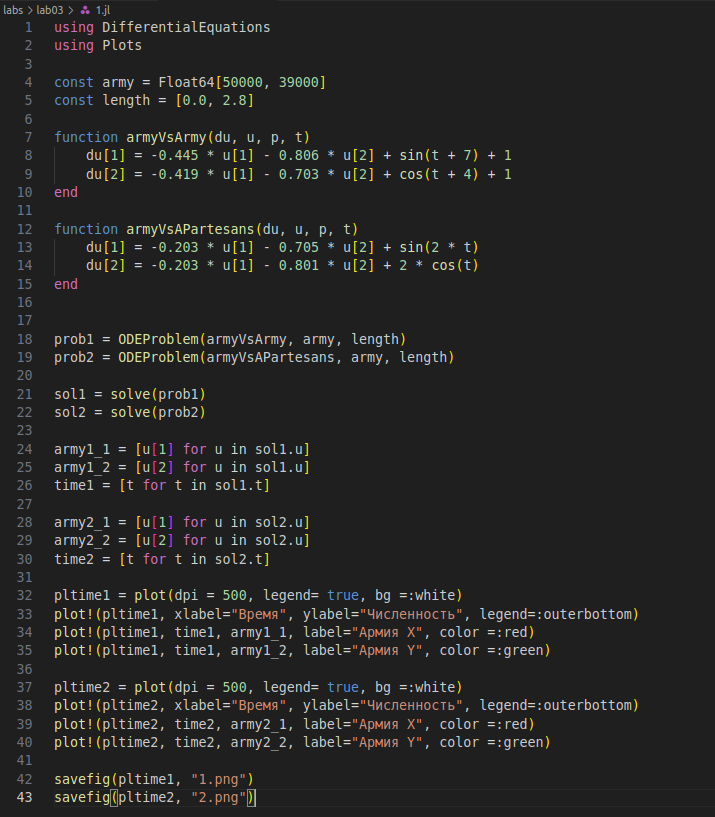
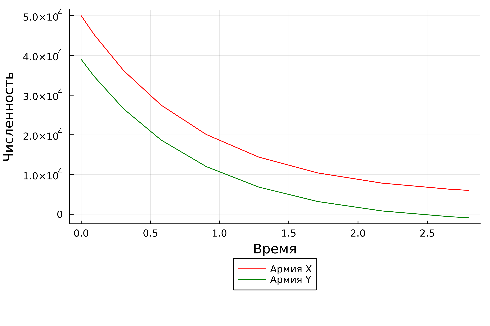
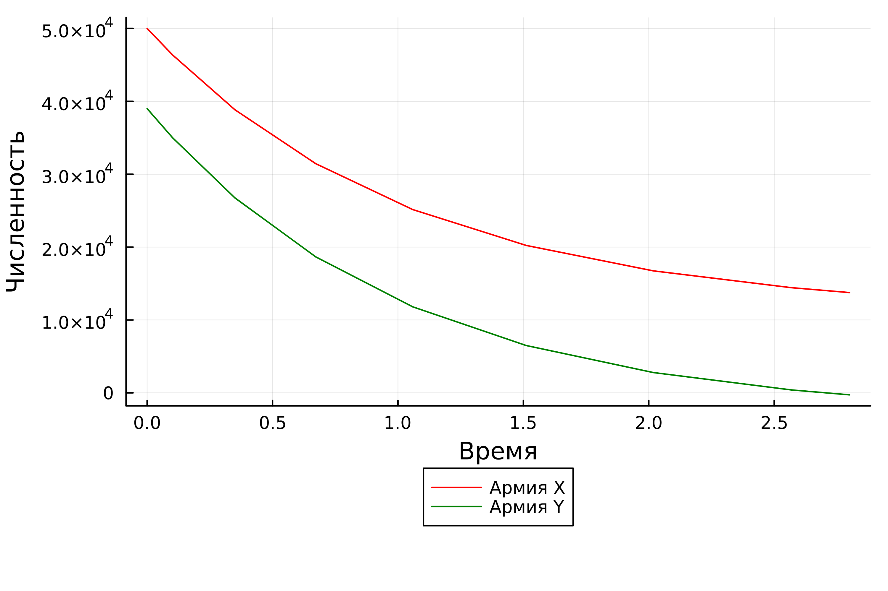

Изучить модели боевых действий Ланчестера. Решить поставленную задачу с помощью языка julia.

Полученные графики (рис 2-3).


Мы изучили модели боевых действий Ланчестера и решили поставленную задачу с помощью языка julia.